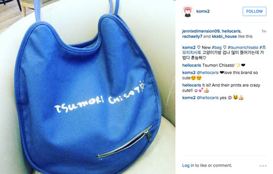
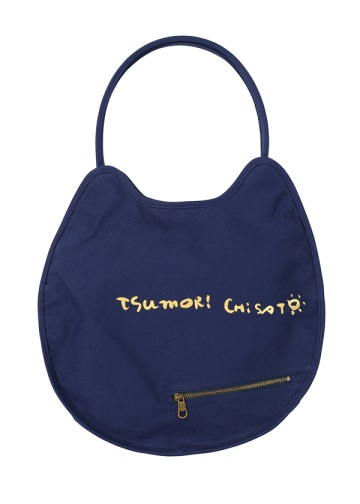
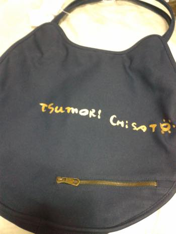
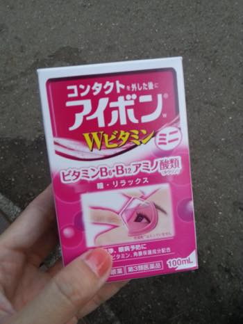
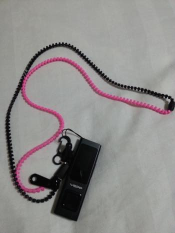
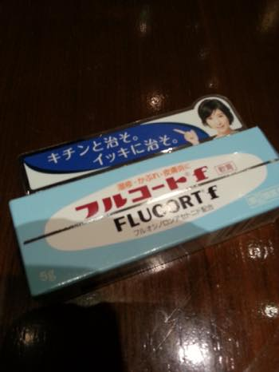
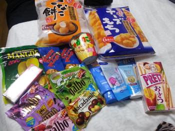
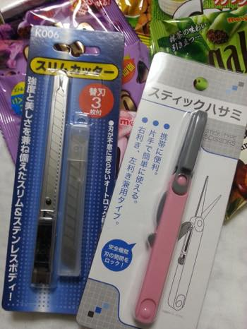

뒤늦게 올리는 (나머지) 일본 쇼핑 후기입니다.
이번 여행서 젤 맘에 든 브랜드는 츠모리 치사토//ㅂ//
신주쿠 마루이 아넥스 매장 하도 들락거렸더니
직원분이 얼굴을 기억하더라구용 홍홍홍
구석에 있는 지퍼가 매력 포인트 입니당
열어놓으면 비웃는거 같고 쪼개는거 같고 귀여움 (←;;)
게다가 많이 들어가는데 가볍습니다
맘에들어요 :D :D :D 뿌듯합니다!!

공홈에서 가져온 사진은 요래요래
검은색이랑 흰색도 있습니다 :)

그리고 이건 사온첫날 숙소서 내가 찍은사진 -_-
동일한 가방도 누가 어떻게 찍냐에 따라 일케 다릅니다 ㅋㅋㅋ

돌아다니면서 유명한거 하나씩 사봤습니다
아이봉 마일드
근데 효과는 잘 모르겠어욤;;

지퍼타입의 스트랩
신기해서 구입해봤습니당
mp3 플레이어 또는 카드홀더 연결해서 다니기에 좋을거 같아서요
그리고 이건 made in korea ^^;;

동네 약국서 구입한 연고
지내는 동안 모기한테 엄청 뜯겼는데
잘때 팔을 엄청 긁어대서 피나고 벗겨지고 난리도 아니라
약국가서 팔을 보여주면서 연고추천해 달랬더니
약국 할아버지가 정말 동네 할아버지처럼 마구 저를 혼내면서
이 연고를 추천해줬습니다 ㅋㅋㅋㅋ
약사가 아닌 진짜 시골 동네 할아버지 같았어요
"긁는게 제일 나빠!! 긁으면 안돼!!" 이러믄서 건네주심
웃으면 안되는데 상황이 늠 웃겨서 켈켈 웃으면서 대답했다능 ㅋㅋㅋ

막판에 과자랑 + 퍼펙트 휩 / 비오레 아쿠아 리치 선크림 하나 더 사왔습니당
중간에 끼어있는건 suisai 세안파우더 트라이얼 키트로 15개 들어있는건데
가끔 사용해 주면 좋더라구용
드라마틱한 효과는 모르겠구 개운하긴 합니당 :)

지내는 동안 잡지를 많이 샀더니
다는 못들고 오겠고 해서 분철할려고 집어온 커터
(그리고 전 결국 오버차지 3000엔 냈습니다 ㅋㅋ)
+
오른쪽은 가위인데 생긴게 신기해서 충동구매^^
필통에 넣어다니기 좋겠는데? 싶어서 사봤습니당
(여기서 필통에 넣어다니면서 까지 가위쓸일이 많냐는건 중요하지 않...)
돌아오는 비행기안에서 한장 :)
7월 8월 여름 도쿄서 보내고
당연한 소리지만;;
한쿡 돌아오니 9월이고 가을이군욤
오자마자 바쁜일도 생겨서 정신도 없는 와중에
피로누적인지 한바탕 앓아 누웠습니다;;
하루종일 먹고 누워있었더니 좀 살거같네용;
에너지 보충한다고 오밤중에 치킨 주문해서 먹구잤어요^^
크흡;; 그래도 하루 쉬었더니 살거같아요
역시 치느님 아픈몸도 낫게해줘//ㅂ//
반반 무많이는 진리입니다 헷헷